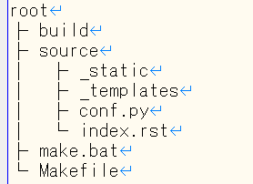

1. 環境構築方法¶
Sphinxを実行するにはPython3.6以降が必要。
1.2. 使い方¶
[1] Sphinxのドキュメントセットを生成
任意のディレクトリ(ここではroot)で以下の様にコマンドを打つ。
>sphinx-quickstart root
途中で以下のような設定項目が現れるので適当に設定する(後で変更可)。
- Project name：{プロジェクト名}
- Author name：{著者名}
- Project release []：{リリースバージョン}
- Project language [en]：ja →日本語変更
上記の設定が終わると以下のようなディレクトリ構造のフォルダ/ファイル群が生成される。
{kind=link}
[2] ドキュメントの記述
rstファイルを作成し、ドキュメントを記述する。
rstファイルはreStructuredText言語で記述されたファイル。
rstファイルはsourceフォルダ内に適当にディレクトリ階層を構築したりなどして配置できる。
[3] conf.pyの設定
必要であれば設定を変更/追加する(特に設定しなくてもビルドはできる)。
ドキュメントセット生成時の情報も変更可(本ドキュメントの設定は「conf」を参照)。
以下に設定例を示す。詳細はビルド設定ファイル(conf.py)を参照。
プロジェクト情報を設定
# -- Project information --
project = "{プロジェクト名}"
copyright = "{西暦}, {著者名}"
author = "{著者名}"
※その他の設定項目
version, release など
言語を設定
language = 'ja'
テーマを設定
html_theme = 'sphinx_rtd_theme'
ビルド時の生成ファイル名は以下のようにして指定できる
# -- document name -----------------------------------------------------
master_doc = '{ファイル名}'
[4] index.rstの設定
rstファイルの読み込みとドキュメント内のツリー構造などを設定できる。
例えば本ドキュメントの設定は以下の様になっている。
.. **** documentation master file, created by
sphinx-quickstart on Thu Apr 9 11:26:00 2020.
You can adapt this file completely to your liking, but it should at least
contain the root `toctree` directive.
.. toctree::
:maxdepth: 2
:caption: Sphinx 入門
:numbered: 3
/document_guide/install
/document_guide/instruction
/document_guide/appendix
.. toctree::
:maxdepth: 2
:caption: Docstring 入門
:numbered: 3
/docstring_guide/install
Indices and tables
==================
* :ref:`genindex`
項目の説明例は以下の通り。細かい設定はここを参照。
.. **** docum... →デフォルトで生成されたコメント(アウト)
.. toctree:: → ドキュメントを構成するファイル群の関係を指定
:maxdepth: 2 → 目次ページに表示するセクションの深さ
:numbered: 3 → 表示するセクション番号の深さ
:caption: {キャプション} → rstファイル単位で付ける目次名
:name: {名前} → refで参照するためのアンカーを指定
:titlesonly: → 目次ページはタイトルだけを表示
:glob: → ワイルドカードでrstファイルを読み込む
:hidden: → 目次ページの目次を非表示
/*/{rstファイル名1} → 作成したドキュメント
/*/{rstファイル名2} → 作成したドキュメント
Indices and tables →目次ページのキャプション(デフォルトで生成される)
==================
* :ref:`genindex` →索引の表示(デフォルトで生成される)
[5] htmlの生成
方法１
>make html
※make htmlコマンドは Makefile と make.bat があるディレクトリで実行する必要がある。
※helpとしてmakeだけ打つと make {option} の指定一覧が確認できる
方法２
>sphinx-build -a ./source ./build/html
>sphinx-build -a {ソースディレクトリ} {出力先}
注釈
make htmlではツリー構造が更新されない場合がある。その場合は、htmlフォルダを削除し作成し直す。
あるいはsphinx-build -a ./source ./build/htmlコマンドで上書きする。
1.3. htmlテーマの変更¶
今使っているのは「sphinx_rtd_theme」
インストール
>conda install -c conda-forge sphinx_rtd_theme
設定
html_theme = "sphinx_rtd_theme"
注釈
conf.pyにhtml_sidebarsが設定されている場合、テーマによってはエラーが発生するかもしれない。 その場合、エラーを回避するためにコメントアウトする。
1.4. 参考(conf.py)¶
本ドキュメントのconfは以下のようになっている。
# Configuration file for the Sphinx documentation builder.
#
# This file only contains a selection of the most common options. For a full
# list see the documentation:
# https://www.sphinx-doc.org/en/master/usage/configuration.html
# -- Path setup --------------------------------------------------------------
# If extensions (or modules to document with autodoc) are in another directory,
# add these directories to sys.path here. If the directory is relative to the
# documentation root, use os.path.abspath to make it absolute, like shown here.
#
# import os
# import sys
# sys.path.insert(0, os.path.abspath('.'))
# -- Project information -----------------------------------------------------
project = '****'
copyright = '2020, @***'
author = '@***'
# The full version, including alpha/beta/rc tags
release = '0.1'
# -- General configuration ---------------------------------------------------
# Add any Sphinx extension module names here, as strings. They can be
# extensions coming with Sphinx (named 'sphinx.ext.*') or your custom
# ones.
extensions = [
'sphinx.ext.todo'
]
# ToDo 項目を表示する (デフォルトは表示しない; False)
todo_include_todos = True
# Add any paths that contain templates here, relative to this directory.
templates_path = ['_templates']
# The language for content autogenerated by Sphinx. Refer to documentation
# for a list of supported languages.
#
# This is also used if you do content translation via gettext catalogs.
# Usually you set "language" from the command line for these cases.
language = 'ja'
# List of patterns, relative to source directory, that match files and
# directories to ignore when looking for source files.
# This pattern also affects html_static_path and html_extra_path.
exclude_patterns = []
# -- Options for HTML output -------------------------------------------------
# The theme to use for HTML and HTML Help pages. See the documentation for
# a list of builtin themes.
#
#html_theme = 'alabaster'
# html_theme = 'classic'
html_theme = "sphinx_rtd_theme"
# Add any paths that contain custom static files (such as style sheets) here,
# relative to this directory. They are copied after the builtin static files,
# so a file named "default.css" will overwrite the builtin "default.css".
html_static_path = ['_static']
# 図番号の設定
numfig = True